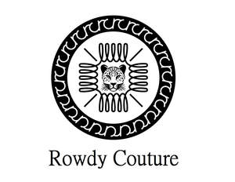

Trade Mark Journal No.2025/017 25 April 2025
UK00004181231 28 March 2025 (25,35)

- Class 25
- Clothing; Footwear; Headwear; fashion hats; menswear; ready-to-wear clothing; knitwear [clothing]; casual clothing; formal clothing; foulards [clothing articles]; clothing; casual footwear; sports clothing; playsuits [clothing]; bandeaux [clothing]; parts of clothing, footwear and headgear; footwear; leather (clothing of -); leather clothing; clothing of leather; leisure clothing; articles of sports clothing; denims [clothing]; knitwear; clothing for leisure wear; smart clothing; corsets [clothing, foundation garments]; footwear for women; headbands for clothing; cashmere clothing; footwear for sports; athletic clothing; jackets being sports clothing; furs [clothing]; men's clothing; women’s clothing; children’s clothing; leisure footwear; lingerie; underwear; underwear for women; hosiery; panties; swimwear; men's underwear; sleepwear; bikinis; bustiers; trunks [underwear]; beachwear; peignoirs; nighties; swimsuits; bathrobes; hooded bathrobes; pyjamas; bath slippers; leather slippers; robes; lounge pants; leather belts [clothing]; leather jackets; leather shoes; suede jackets.
- Class 35
- Advertising; business management, organization and administration; office functions; retail, online retail and wholesale retail services in relation to fashion accessories, cups and mugs, furniture and furnishings, furniture for house, office and garden, living room furniture, office furniture, bedroom furniture, kitchen furniture, personal computer work stations [furniture], fashion sunglasses, fashion spectacles, fashion eyeglasses, perfumery and fragrances, body fragrances, perfumed soaps, fashion jewellery, shoe jewellery, dress ornaments in the nature of jewellery, costume jewellery, fashion handbags, bags for sports clothing, pet clothing, collars for pets, rucksacks, duffel bags, small rucksacks, holdalls, carry-on suitcases, luggage straps, travelling bags, sling bags, leather suitcases, cross-body bags, tote bags, boot bags, wheeled luggage, luggage, bags, wallets and other carriers, knitted bags, bumbags, fashion sunglasses, fashion spectacles, fashion eyeglasses, perfumery and fragrances, body fragrances, perfumed soaps; information, advisory and consultancy services relating to the aforesaid.
Rowdy Couture Ltd